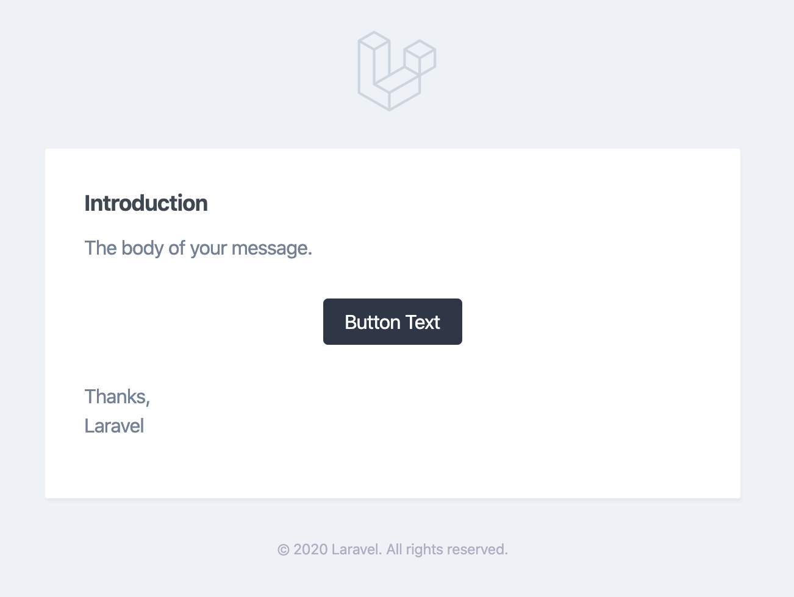

Release Notes
Versioning Scheme
Laravel and its other first-party packages follow Semantic Versioning. Major framework releases are released every six months (~February and ~August), while minor and patch releases may be released as often as every week. Minor and patch releases should never contain breaking changes.
When referencing the Laravel framework or its components from your application or package, you should always use a version constraint such as ^7.0, since major releases of Laravel do include breaking changes. However, we strive to always ensure you may update to a new major release in one day or less.
Support Policy
For LTS releases, such as Laravel 6, bug fixes are provided for 2 years and security fixes are provided for 3 years. These releases provide the longest window of support and maintenance. For general releases, bug fixes are provided for 6 months and security fixes are provided for 1 year. For all additional libraries, including Lumen, only the latest release receives bug fixes. In addition, please review the database versions supported by Laravel.
| Version | Release | Bug Fixes Until | Security Fixes Until |
|---|---|---|---|
| 5.5 (LTS) | August 30th, 2017 | August 30th, 2019 | August 30th, 2020 |
| 5.6 | February 7th, 2018 | August 7th, 2018 | February 7th, 2019 |
| 5.7 | September 4th, 2018 | March 4th, 2019 | September 4th, 2019 |
| 5.8 | February 26th, 2019 | August 26th, 2019 | February 26th, 2020 |
| 6 (LTS) | September 3rd, 2019 | September 3rd, 2021 | September 3rd, 2022 |
| 7 | March 3rd, 2020 | September 3rd, 2020 | March 3rd, 2021 |
Laravel 7
Laravel 7 continues the improvements made in Laravel 6.x by introducing Laravel Sanctum, routing speed improvements, custom Eloquent casts, Blade component tags, fluent string operations, a developer focused HTTP client, first-party CORS support, improved scoping for route model binding, stub customization, database queue improvements, multiple mail drivers, query-time casts, a new artisan test command, and a variety of other bug fixes and usability improvements.
Laravel Sanctum
Laravel Sanctum was built by Taylor Otwell.
Laravel Sanctum provides a featherweight authentication system for SPAs (single page applications), mobile applications, and simple, token based APIs. Sanctum allows each user of your application to generate multiple API tokens for their account. These tokens may be granted abilities / scopes which specify which actions the tokens are allowed to perform.
For more information on Laravel Sanctum, consult the Sanctum documentation.
Custom Eloquent Casts
Custom Eloquent casts was contributed by Taylor Otwell.
Laravel has a variety of built-in, helpful cast types; however, you may occasionally need to define your own cast types. You may now accomplish this by defining a class that implements the CastsAttributes interface.
Classes that implement this interface must define a get and set methods. The get method is responsible for transforming a raw value from the database into a cast value, while the set method should transform a cast value into a raw value that can be stored in the database. As an example, we will re-implement the built-in json cast type as a custom cast type:
<?php
namespace App\Casts;
use Illuminate\Contracts\Database\Eloquent\CastsAttributes;
class Json implements CastsAttributes
{
/**
* Cast the given value.
*
* @param \Illuminate\Database\Eloquent\Model $model
* @param string $key
* @param mixed $value
* @param array $attributes
* @return array
*/
public function get($model, $key, $value, $attributes)
{
return json_decode($value, true);
}
/**
* Prepare the given value for storage.
*
* @param \Illuminate\Database\Eloquent\Model $model
* @param string $key
* @param array $value
* @param array $attributes
* @return string
*/
public function set($model, $key, $value, $attributes)
{
return json_encode($value);
}
}Once you have defined a custom cast type, you may attach it to a model attribute using its class name:
<?php
namespace App;
use App\Casts\Json;
use Illuminate\Database\Eloquent\Model;
class User extends Model
{
/**
* The attributes that should be cast to native types.
*
* @var array
*/
protected $casts = [
'options' => Json::class,
];
}To learn how to write custom Eloquent casts, including custom casts that cast to value objects, please consult the Eloquent documentation.
Blade Component Tags & Improvements
Blade component tags were contributed by Spatie, Marcel Pociot, Caleb Porzio, Dries Vints, and Taylor Otwell.
{tip} Blade components have been overhauled to allow tag based rendering, attribute management, component classes, inline view components, and more. Since the overhaul of Blade components is so extensive, please consult the full Blade component documentation to learn about this feature.
In summary, a component may now have an associated class which specifies the data it accepts. All public properties and methods defined on the component class will automatically be made available to the component view. Any additional HTML attributes specified on the component may be managed using the automatically included $attributes variable, which is an attribute bag instance.
In this example, we will assume that an App\View\Components\Alert component has been defined like so:
<?php
namespace App\View\Components;
use Illuminate\View\Component;
class Alert extends Component
{
/**
* The alert type.
*
* @var string
*/
public $type;
/**
* Create the component instance.
*
* @param string $type
* @return void
*/
public function __construct($type)
{
$this->type = $type;
}
/**
* Get the class for the given alert type.
*
* @return string
*/
public function classForType()
{
return $this->type == 'danger' ? 'alert-danger' : 'alert-warning';
}
/**
* Get the view / contents that represent the component.
*
* @return \Illuminate\View\View|string
*/
public function render()
{
return view('components.alert');
}
}And, assuming the component's Blade template has been defined like so:
<!-- /resources/views/components/alert.blade.php -->
<div class="alert {{ $classForType }}" {{ $attributes }}>
{{ $heading }}
{{ $slot }}
</div>The component may be rendered in another Blade view using the component's tag:
<x-alert type="error" class="mb-4">
<x-slot name="heading">
Alert content...
</x-slot>
Default slot content...
</x-alert>As mentioned, this is just a very small sample of the functionality of the Blade component overhaul in Laravel 7 and does not demonstrate anonymous components, inline view components, and a variety of other features. Please consult the full Blade component documentation to learn about this feature.
{note} The previous
@componentsyntax for Blade components has not and will not be removed.
HTTP Client
The HTTP client is a wrapper of Guzzle and was contributed by Adam Wathan, Jason McCreary, and Taylor Otwell.
Laravel now provides an expressive, minimal API around the Guzzle HTTP client, allowing you to quickly make outgoing HTTP requests to communicate with other web applications. Laravel's wrapper around Guzzle is focused on its most common use cases and a wonderful developer experience. For example, the client makes it a breeze to POST and interface with JSON data:
use Illuminate\Support\Facades\Http;
$response = Http::withHeaders([
'X-First' => 'foo',
'X-Second' => 'bar'
])->post('http://test.com/users', [
'name' => 'Taylor',
]);
return $response['id'];In addition, the HTTP client provides fantastic, ergonomic testing functionality:
Http::fake([
// Stub a JSON response for GitHub endpoints...
'github.com/*' => Http::response(['foo' => 'bar'], 200, ['Headers']),
// Stub a string response for Google endpoints...
'google.com/*' => Http::response('Hello World', 200, ['Headers']),
// Stub a series of responses for Facebook endpoints...
'facebook.com/*' => Http::sequence()
->push('Hello World', 200)
->push(['foo' => 'bar'], 200)
->pushStatus(404),
]);To learn more about all of the features of the HTTP client, please consult the HTTP client documentation.
Fluent String Operations
Fluent string operations were contributed by Taylor Otwell.
You are likely familiar with Laravel's existing Illuminate\Support\Str class, which provides a variety of helpful string manipulation functions. Laravel 7 now offers a more object-oriented, fluent string manipulation library built on top of these functions. You may create a fluent Illuminate\Support\Stringable object using the Str::of method. A variety of methods may then be chained onto the object to manipulate the string:
return (string) Str::of(' Laravel Framework 6.x ')
->trim()
->replace('6.x', '7.x')
->slug();For more information on the methods available via fluent string manipulation, please consult its full documentation.
Route Model Binding Improvements
Route model binding improvements were contributed by Taylor Otwell.
Key Customization
Sometimes you may wish to resolve Eloquent models using a column other than id. To do so, Laravel 7 allows you to specify the column in the route parameter definition:
Route::get('api/posts/{post:slug}', function (App\Post $post) {
return $post;
});Automatic Scoping
Sometimes, when implicitly binding multiple Eloquent models in a single route definition, you may wish to scope the second Eloquent model such that it must be a child of the first Eloquent model. For example, consider this situation that retrieves a blog post by slug for a specific user:
use App\Post;
use App\User;
Route::get('api/users/{user}/posts/{post:slug}', function (User $user, Post $post) {
return $post;
});When using a custom keyed implicit binding as a nested route parameter, Laravel 7 will automatically scope the query to retrieve the nested model by its parent using conventions to guess the relationship name on the parent. In this case, it will be assumed that the User model has a relationship named posts (the plural of the route parameter name) which can be used to retrieve the Post model.
For more information on route model binding, please consult the routing documentation.
Multiple Mail Drivers
Multiple mail driver support was contributed by Taylor Otwell.
Laravel 7 allows the configuration of multiple "mailers" for a single application. Each mailer configured within the mail configuration file may have its own options and even its own unique "transport", allowing your application to use different email services to send certain email messages. For example, your application might use Postmark to send transactional mail while using Amazon SES to send bulk mail.
By default, Laravel will use the mailer configured as the default mailer in your mail configuration file. However, you may use the mailer method to send a message using a specific mailer configuration:
Mail::mailer('postmark')
->to($request->user())
->send(new OrderShipped($order));Route Caching Speed Improvements
The route caching speed improvements were contributed by upstream Symfony contributors and Dries Vints.
Laravel 7 includes a new method of matching compiled, cached routes that have been cached using the route:cache Artisan command. On large applications (for example, applications with 800 or more routes), these improvements can result in a 2x speed improvement in requests per second on a simple "Hello World" benchmark. No changes to your application are required.
CORS Support
CORS support was contributed by Barry vd. Heuvel.
Laravel 7 includes first-party support for configuring Cross-Origin Resource Sharing (CORS) OPTIONS request responses by integrating the popular Laravel CORS package written by Barry vd. Heuvel. A new cors configuration is included in the default Laravel application skeleton.
For more information on CORS support in Laravel 7.x, please consult the CORS documentation.
Query Time Casts
Query time casting was contributed by Matt Barlow.
Sometimes you may need to apply casts while executing a query, such as when selecting a raw value from a table. For example, consider the following query:
use App\Post;
use App\User;
$users = User::select([
'users.*',
'last_posted_at' => Post::selectRaw('MAX(created_at)')
->whereColumn('user_id', 'users.id')
])->get();The last_posted_at attribute on the results of this query will be a raw string. It would be convenient if we could apply a date cast to this attribute when executing the query. To accomplish this, we may use the withCasts method provided by Laravel 7:
$users = User::select([
'users.*',
'last_posted_at' => Post::selectRaw('MAX(created_at)')
->whereColumn('user_id', 'users.id')
])->withCasts([
'last_posted_at' => 'date'
])->get();MySQL 8+ Database Queue Improvements
MySQL database queue improvements were contributed by Mohamed Said.
In previous releases of Laravel, the database queue was not considered robust enough for production usage, due to deadlocks. However, Laravel 7 provides improvements to applications using MySQL 8+ as their database backed queue. By using the FOR UPDATE SKIP LOCKED clause and other SQL enhancements, the database driver may now safely be used in higher volume production applications.
Artisan test Command
The test command was contributed by Nuno Maduro.
In addition to the phpunit command, you may now use the test Artisan command to run your tests. The Artisan test runner provides beautiful console UX and more information regarding the test that is currently running. In addition, the runner will automatically stop on the first test failure:
php artisan test

Any arguments that can be passed to the phpunit command may also be passed to the Artisan test command:
php artisan test --group=featureMarkdown Mail Template Improvements
Markdown mail template improvements were contributed by Taylor Otwell.
The default Markdown mail template has received a fresh, more modern design based on the Tailwind CSS color palette. Of course, this template can be published and customized according to your application's needs:

For more information on Markdown mail, please consult the mail documentation.
Stub Customization
Stub customization was contributed by Taylor Otwell.
The Artisan console's make commands are used to create a variety of classes, such as controllers, jobs, migrations, and tests. These classes are generated using "stub" files that are populated with values based on your input. However, you may sometimes wish to make small changes to files generated by Artisan. To accomplish this, Laravel 7 provides the stub:publish command to publish the most common stubs for customization:
php artisan stub:publishThe published stubs will be located within a stubs directory in the root of your application. Any changes you make to these stubs will be reflected when you generate their corresponding classes using Artisan make commands.
Queue maxExceptions Configuration
The maxExceptions property was contributed by Mohamed Said.
Sometimes you may wish to specify that a job may be attempted many times, but should fail if the retries are triggered by a given number of exceptions. In Laravel 7, you may define a maxExceptions property on your job class:
<?php
namespace App\Jobs;
class ProcessPodcast implements ShouldQueue
{
/**
* The number of times the job may be attempted.
*
* @var int
*/
public $tries = 25;
/**
* The maximum number of exceptions to allow before failing.
*
* @var int
*/
public $maxExceptions = 3;
/**
* Execute the job.
*
* @return void
*/
public function handle()
{
Redis::throttle('key')->allow(10)->every(60)->then(function () {
// Lock obtained, process the podcast...
}, function () {
// Unable to obtain lock...
return $this->release(10);
});
}
}In this example, the job is released for ten seconds if the application is unable to obtain a Redis lock and will continue to be retried up to 25 times. However, the job will fail if three unhandled exceptions are thrown by the job.